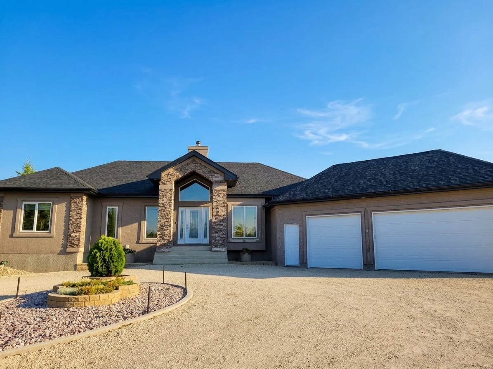
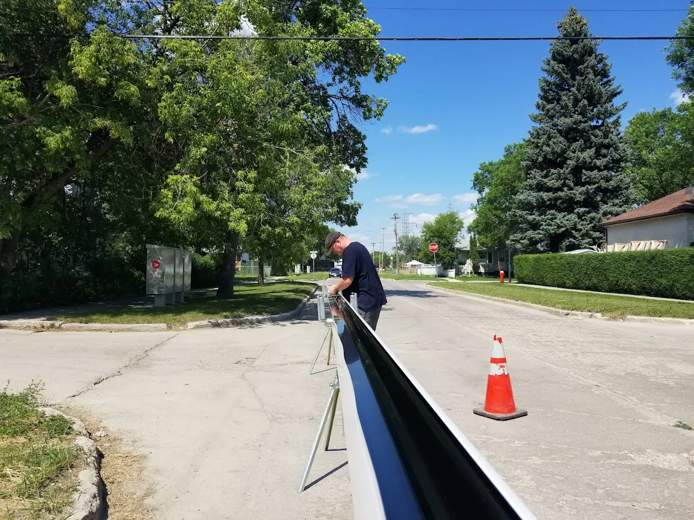
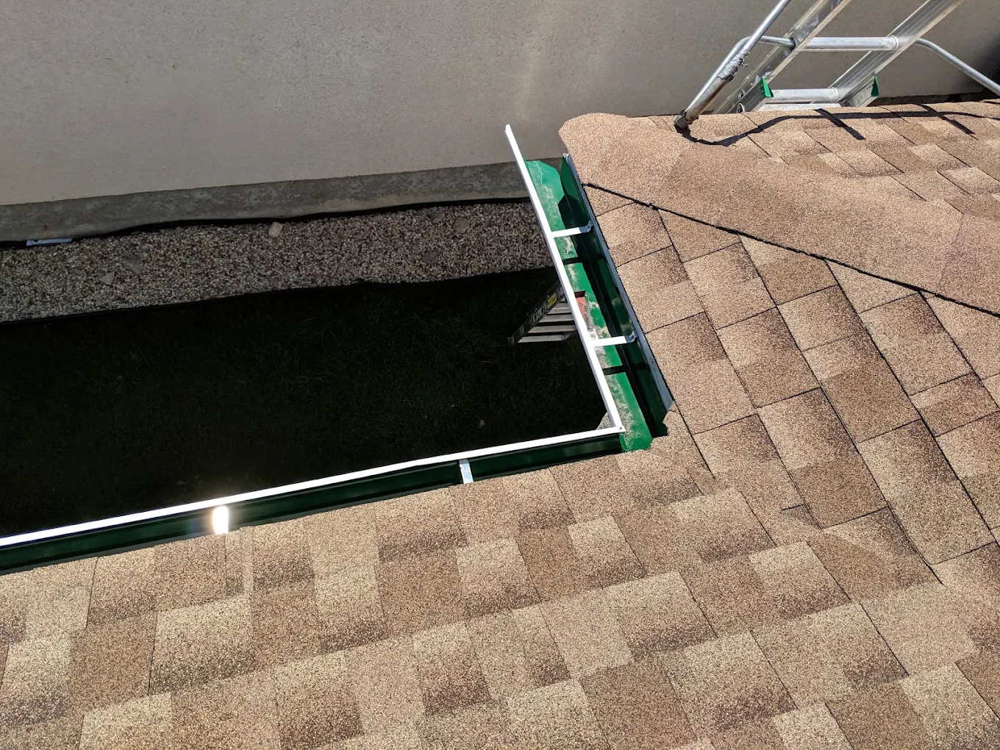
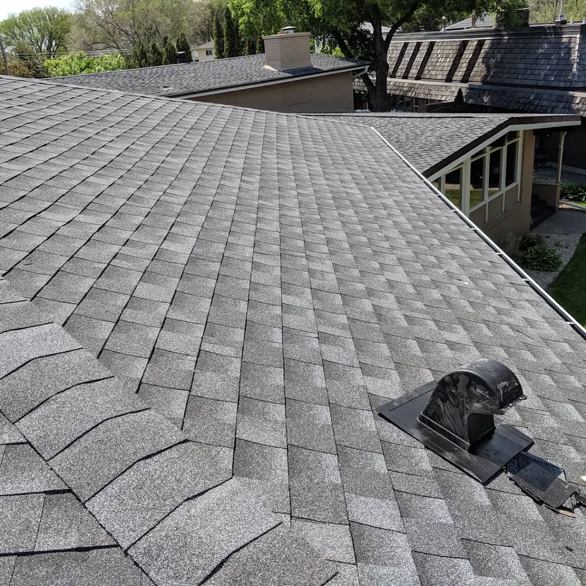
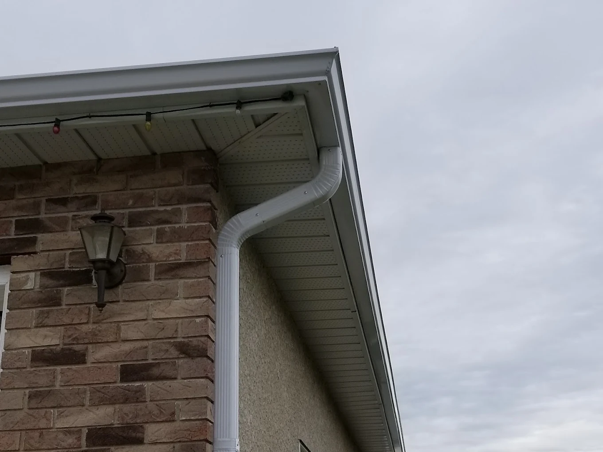
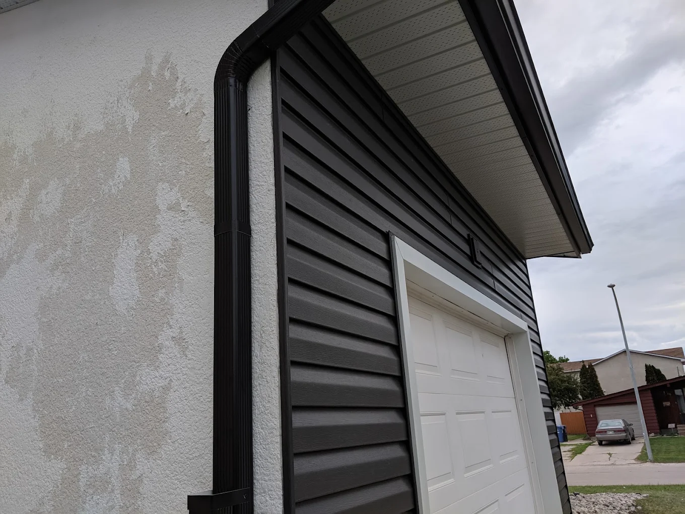
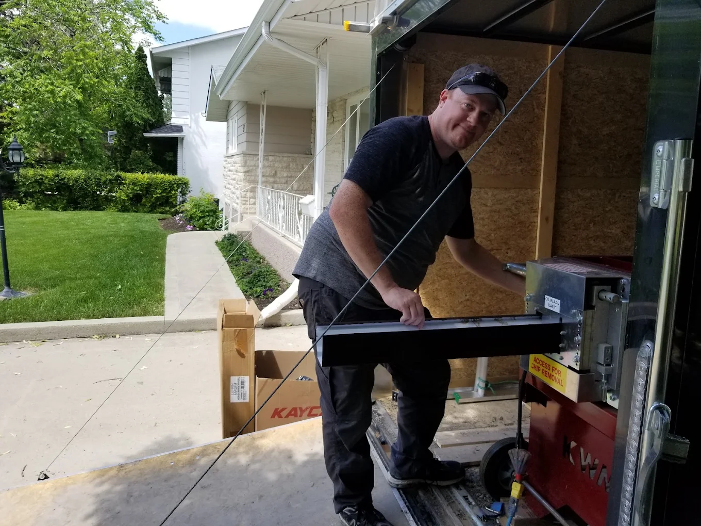
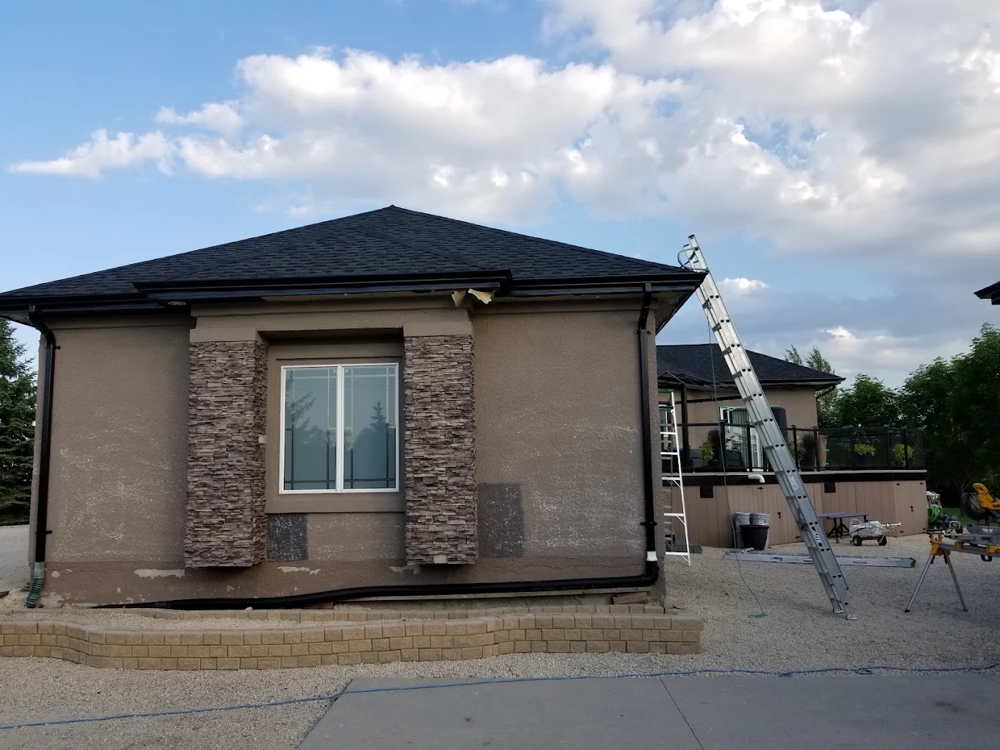
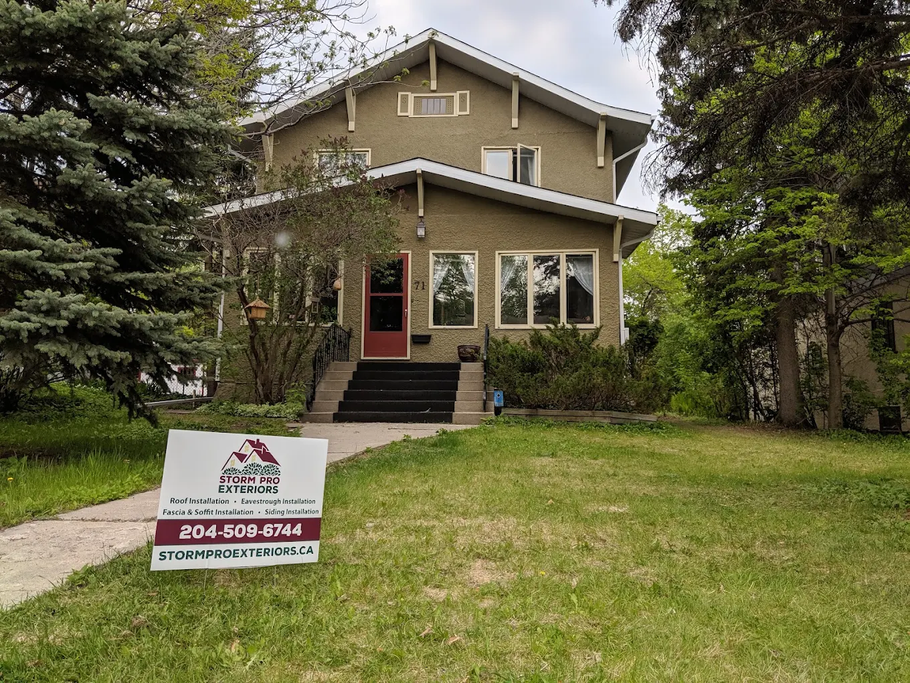

Winnipeg & Surrounding Areas · Twelve Years · Family Run
Seamless eavestrough, rolled on your driveway to the exact inch of your roofline. No joints to split at minus thirty five. No spring melt pouring down your foundation wall while you are at work.
What happens between October and April
A Winnipeg roof sheds thousands of litres every year. Every drop of it lands somewhere. Either three feet out into your yard, or six inches from your foundation. There is no third option, and the difference is a strip of aluminum most people never look at.
Warm air leaks into the attic and melts the snow sitting on your roof, even at minus twenty outside.
That meltwater runs down to the cold overhang, hits your eaves and freezes solid. The ice dam starts building.
Ice expands. Sectional gutters are joined with sealant, and sealant is the part that fails first. Freeze, thaw, repeat.
The melt arrives, the split joint dumps at the wall, and the water goes looking for your basement.
Winnipeg spends half the year crossing back and forth over freezing. Every joint in your eavestrough is a hinge, and every hinge eventually opens.

The difference you are paying for
A coil of aluminum goes into the roll former in our trailer. One unbroken length comes out the other end, cut to the exact measurement of your roofline. Not a ten foot piece joined to another ten foot piece and sealed at the middle and hoped for.
What we install
Water does not respect the boundary between your roof, your fascia and your eavestrough. Neither should the people fixing it. One company owns the whole edge, so there is nobody left to blame when something leaks.

Gutter Guards
A clogged eavestrough is a full eavestrough, and a full eavestrough freezes into a solid block of ice that tears itself off the fascia. Guards keep the leaves and the shingle grit out so the water has somewhere to go in April.

Roofing
Full roof installation, and repairs when a wind storm takes shingles off in June. If the eaves are the aim, the roof is the volume. We do both, which means the two actually get detailed to work together at the edge.

Soffit & Fascia
Fascia is what your eavestrough hangs from. If it is soft, nothing you screw into it holds. Vented soffit is what lets the attic breathe, and an attic that breathes is an attic that does not build the ice dam in the first place. This is the detail nobody photographs and everybody feels.

Siding
Siding installation that finishes what the roofline started. Same crew, same standard, same person answering the phone if you have a question in two years.

Who you are actually hiring
Twelve years on Winnipeg rooflines, and still family run. The person who quotes your job is the person who owns the outcome of it. That is why the reviews keep using the same three words: he answered the phone.
Read them below. We did not write a single one of them, and we have not edited a word.
Real Google reviews
Straight answers
You have heard the stories. The deposit that vanished. The crew that showed up once. The lawn full of nails. You are not being difficult, you are being sensible. So here is every one of those fears, answered, with a real Google review attached to it as evidence.
This is the number one reason people put off the call, and it is a fair fear. The industry earned it. Our answer is not a promise, it is a pattern: twelve years in one city, a name on a lawn sign, and a phone number that has not changed. Storm chasers do not last twelve years in Winnipeg. They last one hail season.
When it is urgent, we treat it as urgent.
I had a problem with my shingles from a wind storm and they came the same day and fixed it no problem!! They fixed what was needed and at a very reasonable price.Kurt Schulz · Local Guide · 25 reviews
You will notice something if you read every review on this page. Almost none of them lead with the aluminum. They lead with the fact that somebody picked up. That is not an accident, and it is not a marketing line. It is the entire reason this business describes itself as a customer service business that happens to make your home better.
They were friendly and would always pick up when I called. Very professional and I would recommend them.crystal haneca · 4 reviews
Neil was great to work with. Always returned my calls. Willing to go around my schedule, which was lovely.Jolene Loewen · 4 reviews
Every homeowner who has had exterior work done knows this one. The crew leaves, and for the next two summers the lawnmower finds another screw. Cleanup is not the glamorous part of the job, which is exactly why it is the part that tells you what a company is actually like when nobody is watching.
They look good and there was very little cleanup left for us, no nails or screws left behind.crystal haneca · 4 reviews
The installers were quick and efficient and clean up was fantastic! Great job very pleased!Ann Ferguson-Brown · 3 reviews
Winnipeg has a lot of character homes and a lot of additions that were never meant to meet each other. Odd rooflines, awkward corners, nowhere obvious to run a downspout. A crew working from a catalogue hits that and gives you a shrug or a bodge. A crew forming the material on site can solve it in front of you.
Came up with some innovating ways to put up the gutters/downspouts. The cost was reasonable for the amount of work that was done.Jolene Loewen · 4 reviews
Whenever there was a quirk with our house and a problem to solve, they explained things very well, and gave options and recommendations.John Constable · 5 reviews
The test of this is not what a company says on its website. It is what happens when there is a small problem they could quietly turn into a big invoice, and nobody would ever know. Two reviews on this page describe exactly that moment. In both of them the extra work got done and the bill did not move.
I inquired about an issue I had with a down spout. The worker said it was a quick fix and made a repair for me after completing his original job. He declined to charge me for it. Greatly appreciated.Morris Strembicki · 1 review
They even fixed a couple of little things they spotted on our roof whilst they were up there.John Constable · 5 reviews
A quote that changes halfway through is usually a quote that was never real to begin with. It was low to win the job. The estimate you get from us is the number we intend to hold, which is why the word that keeps coming back in the reviews is not cheap, it is reasonable. Cheap is what you regret. Reasonable is what you tell your neighbour about.
They provided a super-prompt and reasonable quote and followed up quickly with colour options for my new eaves-trough.Dave Burrows · Local Guide · 22 reviews
Then it is our problem, not yours. This is one of the three guarantees Storm Pro has published for years, and it exists because the alternative is a homeowner discovering the hard way that an uninsured crew on their property is a liability they personally own.
In Storm Pro's own words: choosing the right company for big jobs like your home's exterior can be super stressful. We know how important your family and property is, so we make sure we are insured to cover any unforeseen situations that may occur.
Ask for the certificate at your estimate. Any contractor who hesitates on that question has answered it.
The Storm Pro guarantee is worded as plainly as it can be: your home will be treated just like it is our own. What that looks like in practice is punctual crews, explanations instead of jargon, and being told what is happening before it happens.
Communication from them was also top notch and they made me feel like I was their priority. The team that came for the install shortly after was professional, courteous, knowledgeable and the end result was a great upgrade to my house.Dave Burrows · Local Guide · 22 reviews
The guys who installed everything, Wesley and Skylar, were also patient, punctual and very hard working.John Constable · 5 reviews
You do not, from a website. Nobody can prove durability with a paragraph. What you can do is look at a company that has been doing this in one city for twelve years, then read a review written years after the job, by somebody with no reason left to be polite, and see whether they still sound happy.
Iv received countless compliments from the work these fellas did for me. Very satisfied. Fast,friendly and professionalJames Fenekoldt · Local Guide · 68 reviews
A very pleasant, reassuring and trustworthy company to deal with.John Constable · 5 reviews
Then get the estimate anyway, because the number in your head is probably not the number on the page, and waiting is the expensive option. Water damage does not pause while you save up. A split seam this spring is a fascia board next spring and a foundation conversation after that.
Financing is available through Snap, so the job can be done on the schedule your house needs rather than the schedule your chequing account allows. Ask about it when we come out.
The risk is ours
These are the three promises Storm Pro has published since the beginning, and twelve years later they have not been rewritten. Including for this page.
We are a customer service business that happens to make your home better. Choosing Storm Pro does not just mean quality products on your exterior. It means being treated with respect and care through the entire process.
Your exterior renovation with us is guaranteed to be the best you have ever had. The guarantee is simple. We believe in details. Your home will be treated just like it is our own.
Big exterior jobs are stressful. We know how important your family and your property are, so we carry insurance to cover any unforeseen situation that may occur on your property.

On site
New eaves, new downspouts.
Water aimed away from the wall.
What actually happens next
You reach a person, not a queue. Tell us what is happening: the overflow at the corner, the shingles the wind took, the eavestrough that has been pulling away since the last thaw.
We look at the whole edge, not just the piece you noticed. Then you get a written number and your colour options, and the ins and outs explained until you are comfortable. No pressure to sign anything on the doorstep.
The roll former comes to your house. Your eavestrough is cut to your roofline that day, hung, pitched and tied into the downspouts where the water needs to go.
Offcuts gone, fasteners picked up, driveway swept. Then we walk it with you. You are not chasing us for a snag list two weeks later.

Winnipeg and surrounding areas
We work in the neighbourhoods we live in. That is not a slogan, it is a constraint. A company that has to see your house again every week has a very different attitude to doing the job properly the first time.
Monday to Saturday, nine to six, on a phone that gets answered.
Before you call
In a climate that crosses the freezing point as often as ours does, yes. Sectional gutter is joined every ten feet with sealant, and every one of those joints is a place for ice to work. Seamless removes them. Fewer joints is fewer leaks, and that is nearly the whole argument.
Yes, and you get the options before anything is formed. Homeowners regularly mention getting colour choices sent through quickly after the quote, because picking the colour is the fun part and nobody should be rushed through it.
They are worth it if you have trees, a steep roof, or no interest in going up a ladder in October. A blocked eavestrough in Winnipeg does not just overflow, it holds water that freezes into a heavy block and starts pulling the whole run off your fascia. Guards are cheaper than that repair.
Both. Storm damage repairs get treated as the urgent thing they are. If a repair is the right answer, we will tell you that rather than sell you a replacement you do not need yet.
Winnipeg, Manitoba and the surrounding areas. Office hours are Monday to Saturday, 9:00am to 6:00pm. If you are not sure whether you are in range, call and ask, it takes thirty seconds.
Yes. Financing is available through Snap. Ask about it at your estimate and we will walk you through what it looks like for your job.
Free estimate · No obligation · No doorstep pressure
One phone call, one measurement, one honest number. If the answer is that your eavestroughs have another few years in them, that is what we will tell you.
Twelve years in Winnipeg · Monday to Saturday, 9:00am to 6:00pm · Fully insured · Financing available